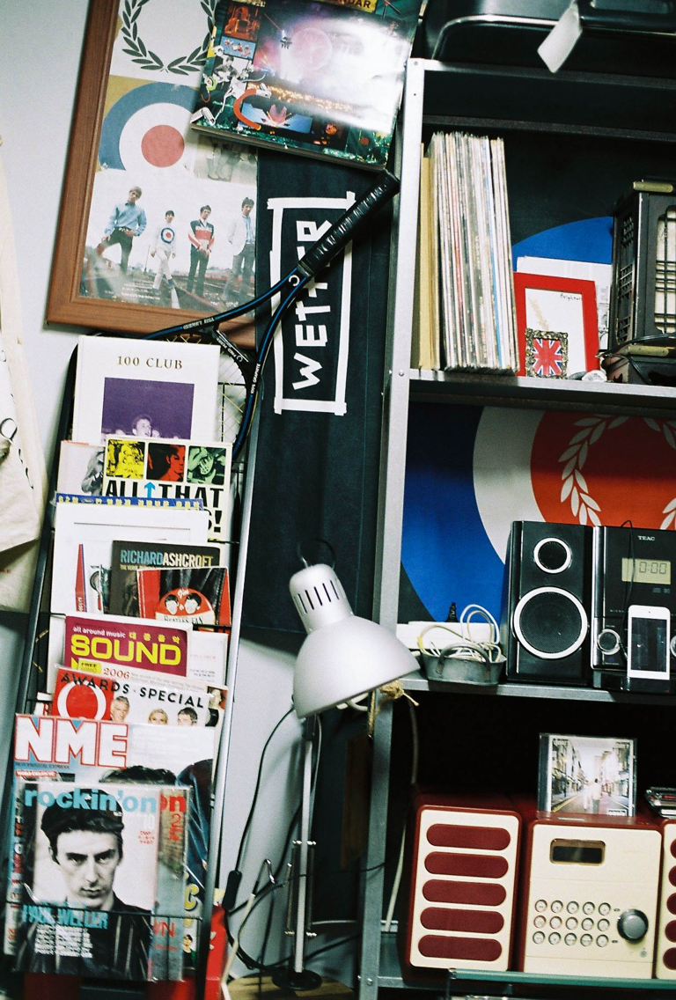

1. *모즈
모즈 - Mods ; Moderns의 약자, 1960-70년대 영국 카나비 스트리트를 기반으로 형성된 청년 문화. 당시 '라커스' 문화와 대립 구도를 형성했었다. 이후 여러 갈래로 퍼지며 다양한 문화에 많은 영향을 주었다.
영화한편..
- 콰드로페니아
(Quadroph
enia,1979). 모즈 문화를 다룬 영화이다.
곰곰이 생각해보니 2014년에 군 복무를 마치고 나서부터 계속 일을 했던 것 같습니다.영화한편..
- 콰드로페니아
(Quadroph
enia,1979). 모즈 문화를 다룬 영화이다.
갚아야 할 것들과 책임져야 할 것들이 있었기에 어쩔 수 없는 선택이었고, 어느 4개월의 시간 동안은 일주일 중 4일간 잠들지 않고 3가지의 일을 병행했었죠.
지쳐갈 때쯤 군 생활 시절 알게 된 형이
*영화 한 편을 추천해준 게 시작이었을 거예요. 60년대를 시작으로 현재까지 이어온 영국의 서브컬처 ‘모즈’에 관한 영화였고, 당시를 살아가는 어린 주인공을 중심으로 여러 가지 상황과 감정을 보여주는 영화였어요.
어린 주인공은 생계유지를 위해 노동을 해야만 하는 본인의 환경을 탓하면서도 노력했고, 일터를 벗어난 후에는 누구보다 당당한 모즈로서 하루를 보냈죠.
문제가 될 수 있는 강한 행동들도 일삼았지만 저에게는 방어하기 위해 몸부림치는 수단으로 보였고, 이 모든 모습들에 공감을 넘어 동질감을 느끼게 된 거죠. 저 또한 많은 불만으로 가득 차 있었고, 이 불만들은 자기 비하로 이어져 스스로를 갉아먹고 있었었거든요.
영화의 엔딩이 올라감과 동시에 나에게도 하루 중 당당할 수 있는 몇 시간이 필요하다고 간절히 느꼈고, 완벽하진 않겠지만 한국 안에서 살아가는 모즈가 되기로 결심했습니다. 모즈라는 문화를 떠올릴 때 복식이나 그 외 화려한 외적인 요소들을 생각하는 것이 대부분이겠지만 저에게는 공감과 동질감, 넘어선 나를 개선하는 돌파구였던 거죠.
그렇게 시작이 됐고, 저는 여전히 모즈로 살아가고 있어요.
2-1. 매력
60년대를 출발해 현재까지도 수많은 영향을 미칠 정도로 매력적인 요소는 너무 많아요.
람브레타, 베스파 - 둘 다 이탈리아 기반의 스쿠터 브랜드. 모즈 문화 속 청년들은 스쿠터를 즐겨 탔다.
멋진 슈트에 잼슈즈나 클락스를 신고 피쉬테일 파카를 걸친 뒤 *람브레타 혹은 베스파를 타며 당당한 에티튜드로 활보하는 그들의 모습 그 자체만으로도 큰 매력이겠죠.
하지만 모두가 꼭 알고 공감해 주셨으면 하는 건 그들의 배경과 이유입니다. 빛과 그림자가 극명했던 시대 속 그 안에서 나뉘는 빈부격차. 노동 계층이었던 그들은 물질의 부족함을 문화로 채우려고 노력했고, 노력들이 모여 저의 기준 안에선 그 어떤 무리들보다도 진심 어리며 농도 짙은 문화로 성장했어요.
우리 모두 모즈인 거죠 - 'We are The Mods', 모즈의 슬로건이다.
현재의 우리도 많은 생각을 해야만 하고 정신적 육체적 노동을 필수로 하는 시대를 살고 있음에도 불구하고 각자의 개성은 지키며 살아내고 있다는 것이 모즈와 닮아있는 듯해요. 결국 *우리 모두 모즈인 거죠.
가치관과 배경이 결핍된 문화는 절대 지속될 수 없다고 생각해요. 그렇기 때문에, 모즈는 아마 영원할 거예요.
2-2. 에피소드
모즈와 관련해서 아직까지 인상 깊게 남아있는 추억은 2016년 좋은 기회로 빈티지 샵을 단기간 운영하여, 인테리어에 제 자신을 많이 반영한 채 영국 복식 판매를 진행한 때였어요.
가게 마지막 날 영국 손님들이 방문했었는데, 한국말을 잘하시는 강사분이셨어요. 가게를 둘러보시더니 고향 생각이 난다며 본인의 집 근처에도 이런 샵들이 많다고. 그렇게 30분가량 이야기하며 제 취향을 나눈 게 아마 저를 단단하게 만드는 계기였던 것 같아요.
여담으로, 평소 어딘가 새겨진
타겟 엠블럼 -모즈의 시그니처 엠블럼이다.
*타겟을 보고 연락 오는 건 다반사지만 동계 올림픽 때 컬링을 보고 연락 오는 친구들이 많았던 것도 꽤나 재밌었던 기억이네요.

3. 강병역, 모즈
제 인스타그램 아이디는 ‘disfence’, Diss(비하)와 Defence(방어)의 합성어입니다. 그만큼 자신을 깎아내리며 스스로를 감추는 방어적 자기 비하를 일삼는 우울한 사람이었어요. 실제로 치료를 동반한 적도 있었죠.
그러다 모즈를 알게 되었고 앞서 말씀드린 것처럼 부족하지만 당당한 그들의 모습이 저에게는 아주 큰 돌파구가 되어주었습니다.
그렇다고 저에게 극적인 변화가 일어난 건 아니에요. 단지 저에게도 진심을 다해 집중하고 좋아할 수 있는 게 생겼고, 이 생각과 마음이 현재까지 이어져 제 스스로를 보다 덜 미워할 수 있는 사람이 된 것 같아요.
모즈라는 고집과 취향을 통해 좋은 친구들도 많이 만났고, 빗대자면 무너져 가는 초가집이었던 제가 사랑방을 갖춘 기와집이 되어 조금은 견고한 구조로 변한 것 같아요,
4. 보광동
상경 이후 변함없이 이태원의 끝자락 보광동에서 지내고 있습니다.
처음 집을 구할 때 좋아하는 친구의 작업실이 있어 겸사겸사 와보게 되었는데 보광동이 보여주는 거리와 여러 모습들이 제가 원래 살던 동네와 흡사했어요. 그 익숙한 느낌이 살게 된 가장 큰 이유였던 것 같아요.
살다 보니 더 좋아지는 건 한강이 가까워 서울이라는 특수한 지역을 보다 실감할 수 있다는 점과 보광동 내에서도 외국인들이 많이 거주하는 지역 어르신들이 많은 지역, 젊은 자취생들이 많은 지역 등으로 나누어져 각 골목이 풍기는 이미지를 통해 많은 감정을 느낄 수가 있는 점이에요.
보광동은 낙후된 지역으로 알려져 있지만 그렇다고 해서 이곳에 사는 사람들이 낙후되고 지쳐 있진 않다는 게 너무나 큰 매력이에요.
목표를 가지고 발돋움 중인 친구들이 존재하고 이곳을 지탱하는 오래된 가게들과 사람들이 존재하고 있죠. 재개발되기 직전인 높은 사람들에게는 낮은 동네일지는 몰라도, 이곳에서 느끼고 쌓은 감정들의 탑은 그 어떤 곳보다 높아 이제는 떠나고 싶어도 떠날 수가 없을 것 같아요.
언젠가 이 동네가 없어지더라도 제가 지나온 집들과 그 집을 찾아줬던 친구들, 내가 기댔던 친구들 때문에 제 기억과 마음속에서는 변하지 않고 여전히 존재하는 동네일 듯싶습니다.
다시 1. ‘이상’
이상을 품을수록 이상한 사람이 되어버리는 듯한 느낌을 받습니다. 이러한 느낌을 받는 근원은 스스로가 아닌 타인의 시선에 있다고 스스로를 위로하여 안도하기도 했습니다.
하지만, 저의 이상은 생각보다 낮음에도 되려 급경사의 미끄럼틀처럼 오르기가 쉽지 않았고, 계속 넘어지다 보니 이상을 이상하게 만드는 건 제가 아닌가라고 느끼게 된 거죠.
조금씩 천천히 오르면 될 것을 쌓여가는 넘어짐의 횟수로 판단해, 내가 품은 이상은 이상일 뿐이라고 단정 짓기까지 이른 것 같습니다. 고향인 부산을 떠난 이유이기도 했습니다. 부산이 아닌 서울이라는 도시에서 바라본 이상은 높고 낮음이 아니라 다름이라는 존중 어린 기준만이 존재했습니다.
서로의 이상에 대해 나누고 같이 쌓아가며, 같지만 다른 이상을 바라보기도 하고, 너는 이상하지 않다고 충분히 잘 해내고 있다고 등 뒤를 받쳐주는 이들이 존재하는 고마운 도시입니다.
2. 모즈와 이상
아주 단순하고 확실합니다. 많은 지식과 고증을 지님에도 불량한 태도를 보이는 것에 반하여 부족하지만 성실하게 집중하는 태도를 가지는 것. 이게 제가 바라보는 모즈의 이상입니다.
모즈 문화와 관련해 추천해주고 싶은 무언가
국내에서 특별히 공간을 추천한다거나 하기엔 다양성이 부족한 사람인지라 자신이 없네요. 다만, 고집과 집중이 녹아든 모든 공간이라면 어디든 좋지 않을까 싶어요.
세븐 시스터즈- 세븐 시스터즈는 영국 런던 근교 남부 해안에 있는 거대한 백악질의 절벽이다.
개인적으로, 영국을 가게 된다면 카나비 스트릿으로 가 양손 가득 쇼핑을 하고
*세븐 시스터즈에서 뒹굴고 브라이튼 해변 카페에서 석양을 보고 싶네요.
그 외 꼭 추천하고 싶은 매체는 @thebsidemagazine이에요. 모즈뿐만이 아닌 영국의 타문화를 비롯해 여러 서브컬처들의 다양한 정보를 친숙하고 심도 있게 다루는 매거진이에요. 존경하는 분들이 함께 하는 만큼 모두가 읽고 봐주셨으면 합니다.